WebGL Planet

Простой 3d рендер на WebGL без фреймворков
Oбо мне
- Волкова Анна
- Фронтенд-разработчик 2 года
- В Альфа-банке в команде AlfaCall
Почему я решила рассказать про WebGL?
- WebGL - это отличный способ развлечь себя решением нестандартных для фронтендера задач в знакомой среде
- Возможность узнать что-то новое про компьютерную графику
Что я расскажу?
- Что такое WebGL?
- Как WebGL работает?
- Как рисовать 2d на WebGL
- Как создать 3d планету на WebGL без использования библиотек и фреймворков
Что такое WebGL?
— это графическое API, которое позволяет отправлять команды на видеокарту из JavaScript
Khronos Group Members
Где используется WebGL?
Для работы с растровыми изображениями
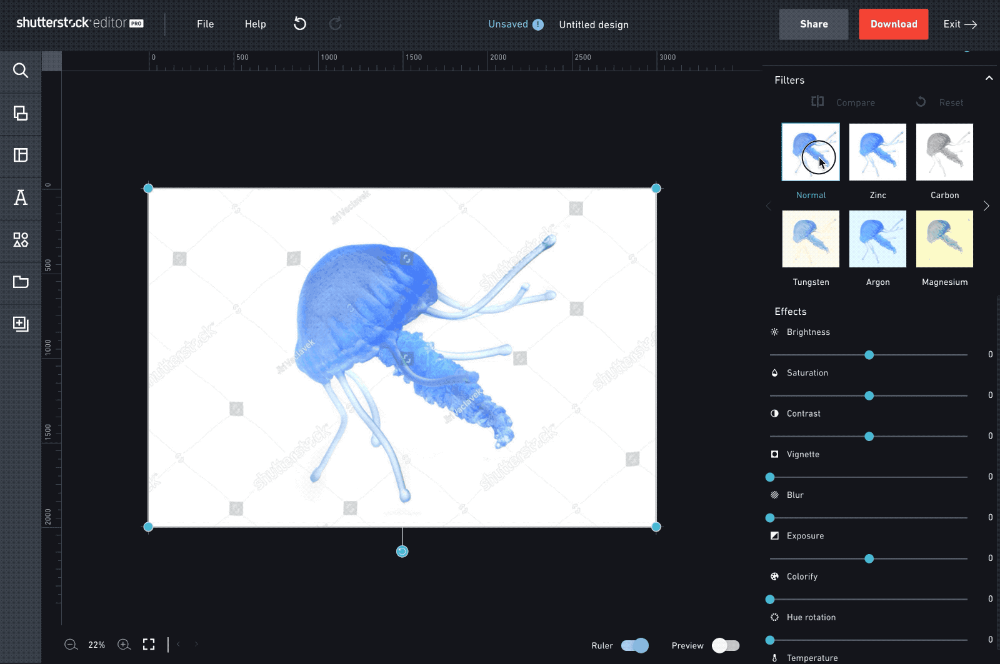Интерактивная презентация машин и интерьеров
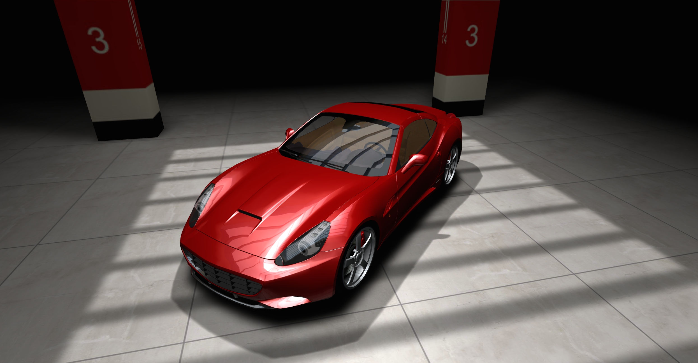Интерактивная графика
(для проигрывателей музыки)
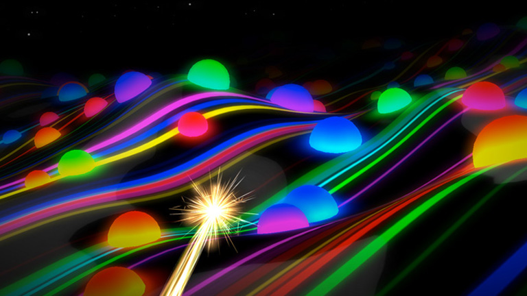
Art + tech
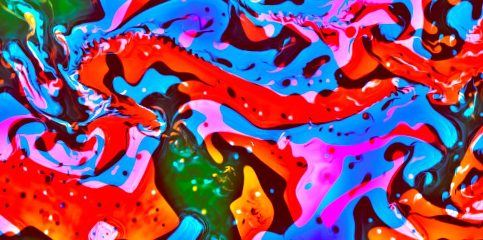Игры
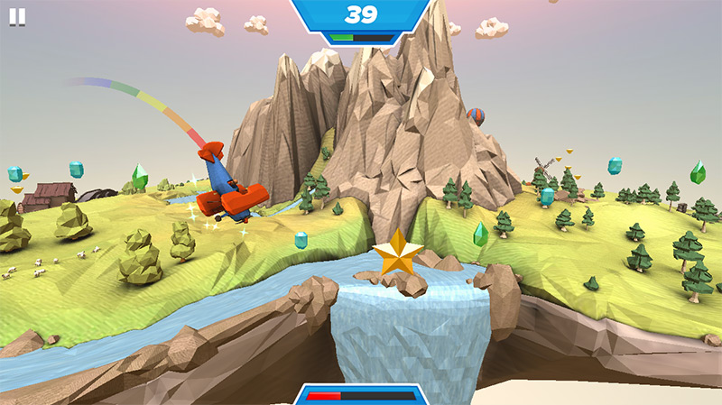Интерактивные примеры
WebGl программы
CPU
vs
GPU
- Процессор Core i7, 2,7ГГц - 4 ядра, видеокарта Radeon Pro 450 - 640 ядер
- Видеокарта заточена на параллельное выполнение несвязанных между собой задач
Клиент-серверная модель
- JavaScript code - это клиент
- Видеокарта - это сервер
- JavaScript code отправляет запросы на видеокарту через интерфейс WebGL
Как видеокарта рисует с помощью WebGL?
Описание объекта
— геометрия, состоящая из треугольников и материалов, которые описывают, как эти треугольники нужно раскрасить
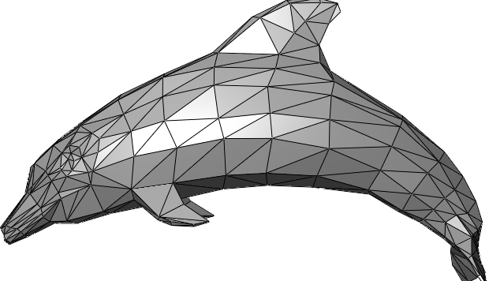Работа на видеокарте
- Преобразование позиций треугольников
- Проекция результирующей модели на экран
- В растеризаторе спроецированные треугольники разбиваются на фрагменты
- Определение цвета для каждого фрагмента во фрагментном шейдере
Графический pipeline WebGL
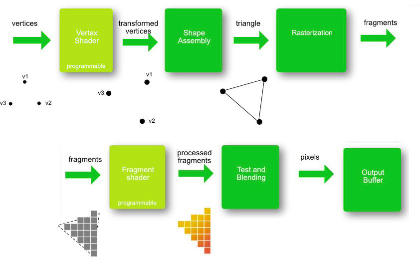Input Assembler
(фиксированный этап)
- С помощью функции gl.bufferData(...) - мы переносим данные из javascript’a на видеркарту
- Вершинный буффер:
- Позиция
- Нормаль
- Текстурные координаты
const vertices = new Float32Array([
// vertex 1
-0.5, -0.5, 0.0, // position
1.0, 0.0, 0.0, // normal
0.5, 0.5, // texCoord
...
// vertex n
1.0, 0.5, 0.0, // position
0.0, 1.0, 0.0, // normal
1.0, 0.5, // texCoord
]);
Vertex shader
(програмируемый этап)
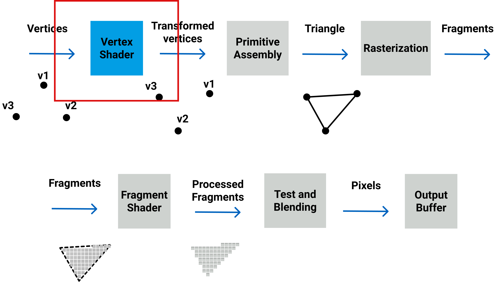Vertex shader
-
Получаем данные, которые описывают вершину через атрибуты:
- позиция, нормаль, текстурные координаты
// attribute means it comes from the geometry array we created
attribute vec3 a_position;
attribute vec3 a_normal;
// uniforms - constants
uniform mat4 u_worldTransform;
uniform mat4 u_viewProjection;
// output to fragment shader
varying vec3 v_normal;
void main() {
vec4 worldPos = u_worldTransform * vec4(a_position, 1.0);
vec4 viewPos = u_viewProjection * worldPos;
v_normal = mat3(u_worldTransform) * a_normal;
gl_Position = viewPos;
}
Преобразования над данными
- Матрица трансформации вершин из пространства модели в мировое пространство
- Матрица трансформации из мирового пространства в пространство камеры
- Матрица трансформации из пространства камеры в пространство отсечения
Пространство камеры
vs
пространство отсечения
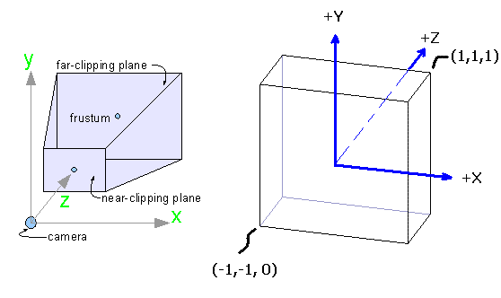Проекция
- Ортогональная - линии проецирования переносятся перпендикулярно плоскости проекции
- Перспективная - луч проекции идет от проецируемой точки в позицию камеры

gl_Position
- На выходе вершинный шейдер возвращает позицию вершины в gl_Position
- gl_Position — значение координат пространства отсечения
Primitive Assembly
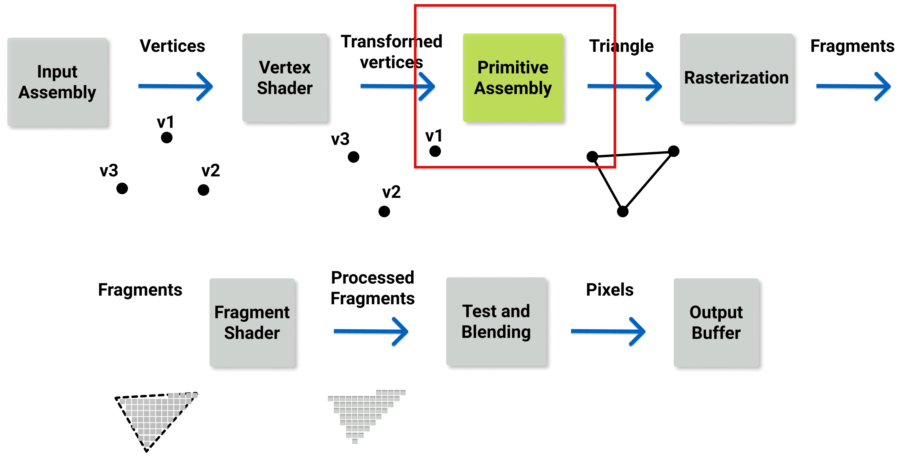Primitive Assembly
(фиксированный этап)
- Cобирает из вершин примитивы
- WebGL - поддерживает три типа примитивов:
- точки, линии, треугольники
Rasterizer
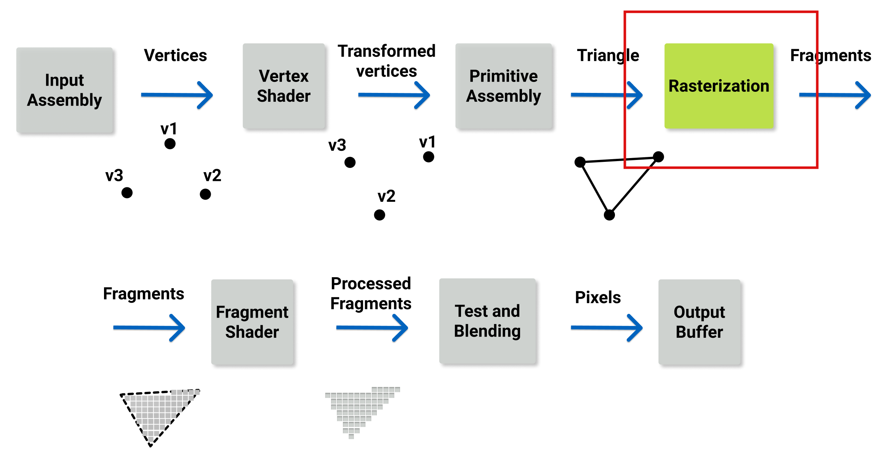Rasterizer
(фиксированный этап)
- Видеокарта определяет, какие пиксели в итоговом Frame buffer перекрываются рисуемым примитивом
- Интерполяция данных вершин внутри треугольника

Fragment Shader
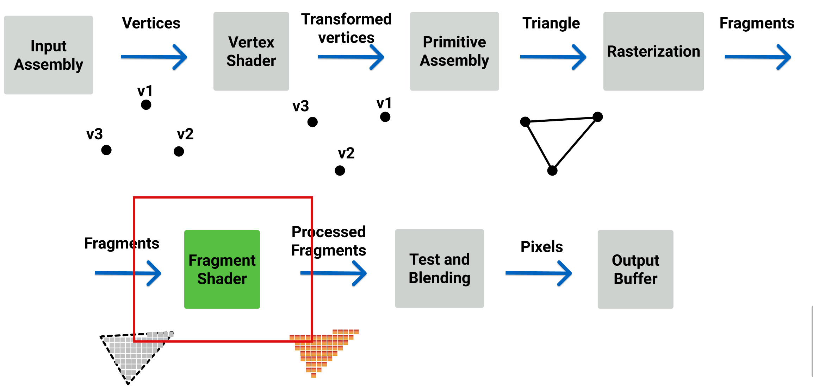Fragment Shader
(програмируемый этап)
- Для каждого фрагмента, полученного из Rasterizer мы выполняем один Fragment shader
- На выходе Fragment shader дает цвет итогового фрагмента - gl_FragColor
// uniforms
uniform vec3 u_lightDir;
uniform vec3 u_lightColor;
//input from vertex shader
varying vec3 v_normal;
void main() {
float NoL = max(dot(v_normal, -u_lightDir), 0.0);
gl_FragColor = vec4(NoL * u_lightColor, 1.0);
}
Test and Blending + Output Buffer
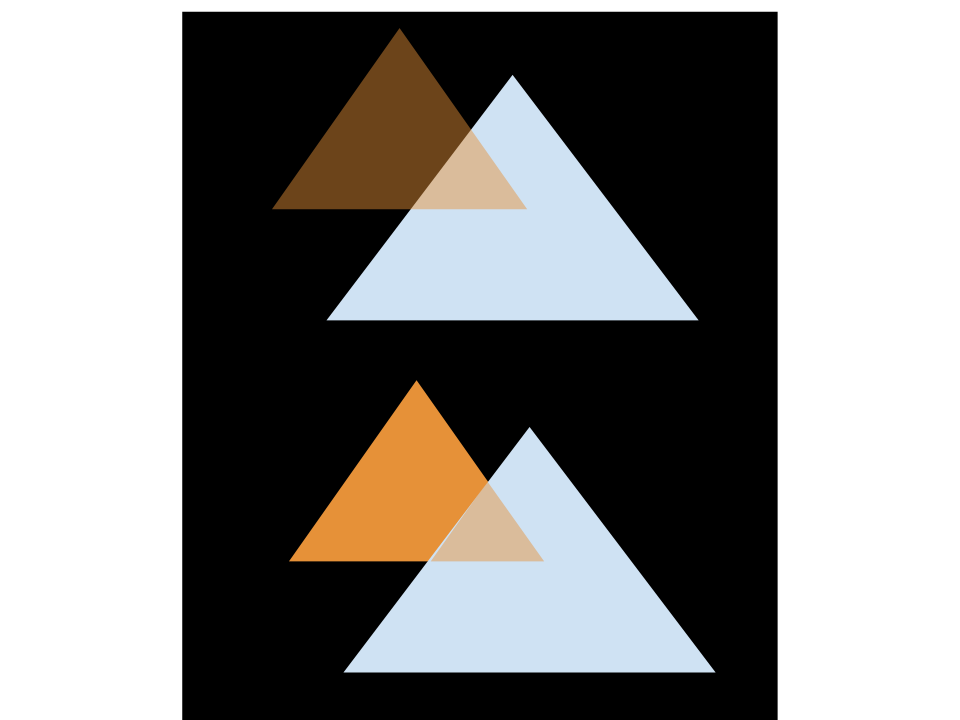Подводим итоги
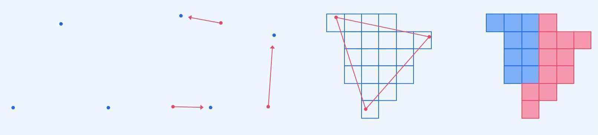WebGL 2d
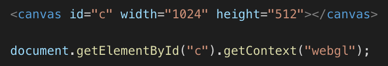WebGL 2d

WebGL 3D
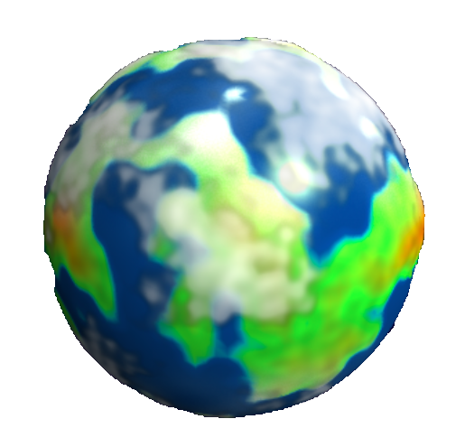3 Ways to Create a Mesh for a Sphere
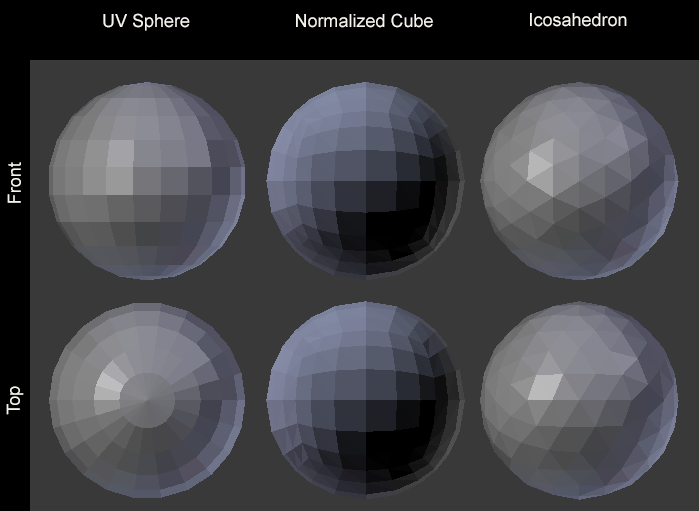UV sphere
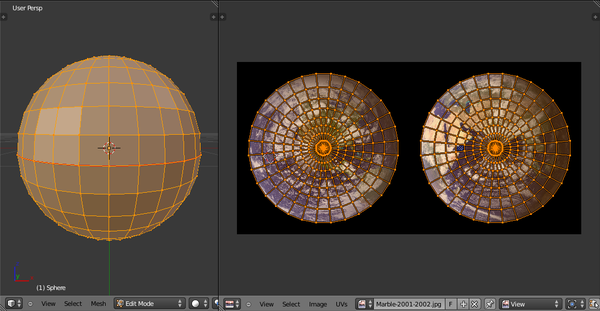ICO sphere
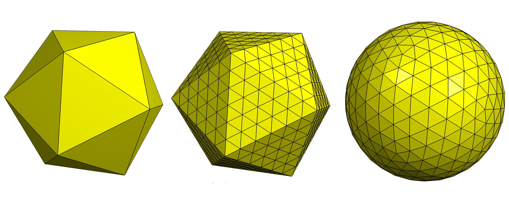Normalized Cube
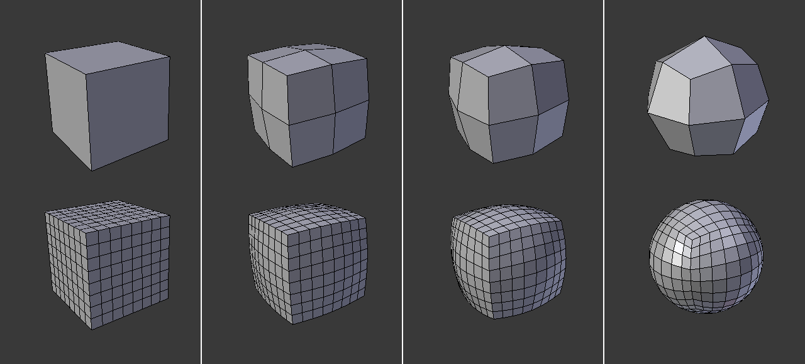Перобразование куба в сферу
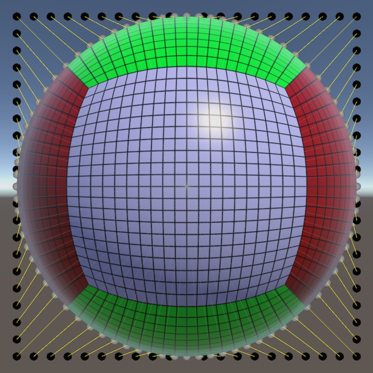Нормаль
- Нормаль - это единичный вектор, перпендикулярный поверхности в каждой данной её точке
Генерация карты высот
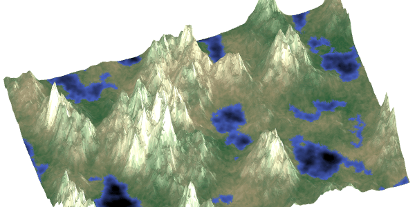Функция шума
- 0.0 - черный, 1.0 - белый
// функция noise возвращает случайное число
float noise (in vec2 st) {
return fract(sin(dot(st.xy,
vec2(12.9898,78.233))) * 43758.5453123);
}
Приведение шума в соответствие с картой высот

elevation[y][x] = noise(nx, ny);
3 Октавы шума
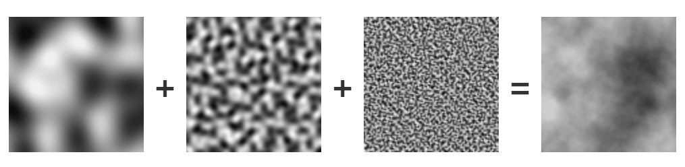
elevation[y][x] = 1 * noise(1 * nx, 1 * ny);
+ 0.5 * noise(2 * nx, 2 * ny);
+ 0.25 * noise(4 * nx, 2 * ny);
Изображение процедурного мира
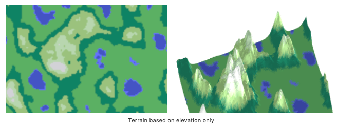AlphaBlend для облаков
gl.enable(gl.BLEND);
gl.blendFunc(gl.SRC_ALPHA, gl.ONE_MINUS_SRC_ALPHA);
blendResult = shaderOutput.rgb * shaderOutput.a +
frameBuffer.rgb * (1 - shaderOutput.a);
Planet

Чтобы сделать 3d модель объёмной, ее необходимо осветить
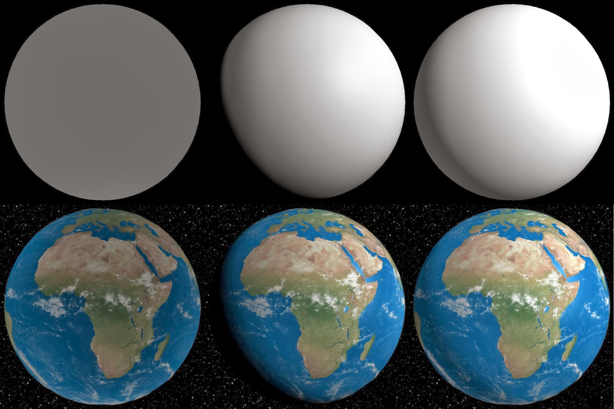Освещение по Фонгу
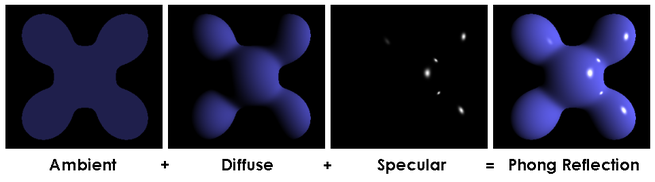- Фоновое освещение (ambient) — имитация света, достигшего заданной точки после отражения от других объектов.
- Рассеянное освещение (diffuse) — свет от источника, рассеянный после попадания в заданную точку. В зависимости от угла, под которым падает свет, освещение становится сильнее или слабее.
- Отраженное освещение (specular) — свет от источника, отраженный после попадания в заданную точку. Отраженный свет виден, если он попадает в камеру.
Освещение
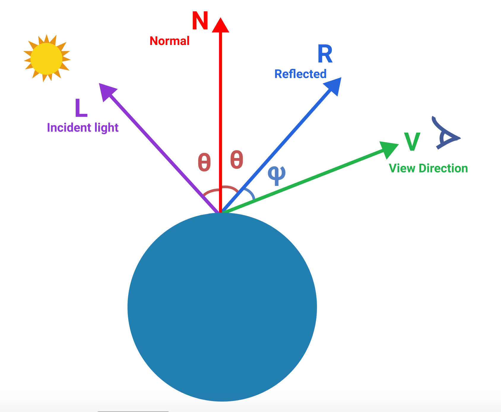
Ip = kα iα
+ kd (L . N) id
+ ks (R . V)α is
Aliasing
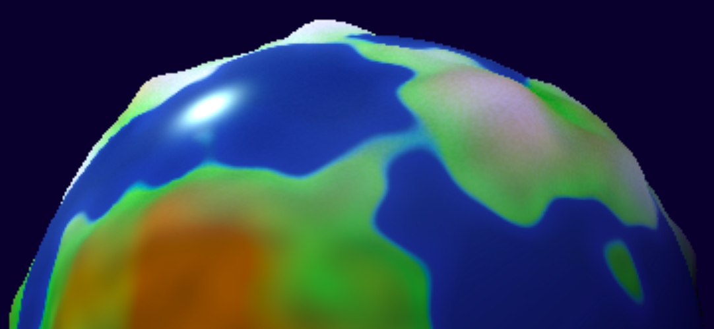
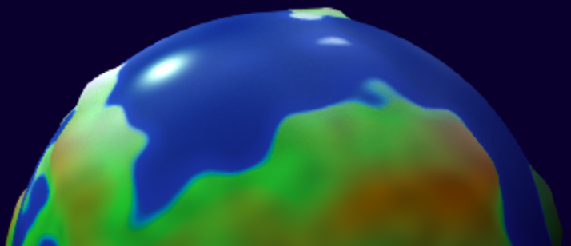
FXAA - fast approximate anti-aliasing
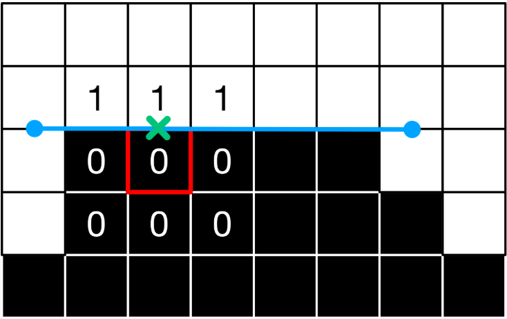
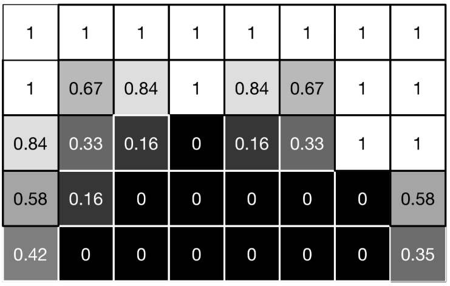
L = 0.2126 * R + 0.7152 * G + 0.0722 * B
Planet